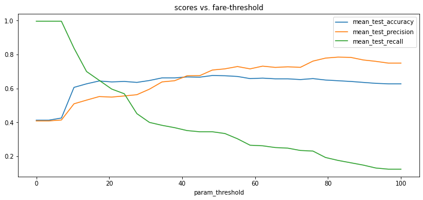
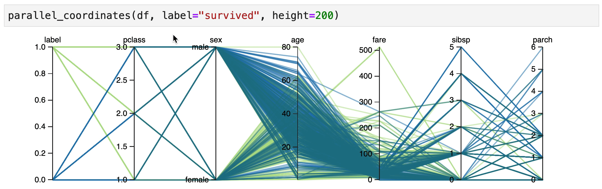
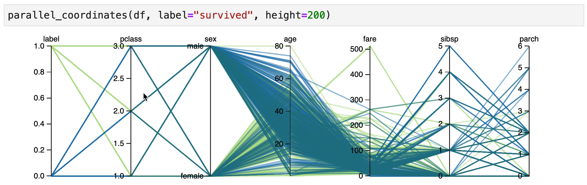

Function as a Model VN
The goal of this library is to make it easier to declare common sense models. A very pythonic way of getting there is to declare a function. One of the first features in this library is the ability to re-use functions as if they are scikit-learn models.
Titanic¶
Let's see how this might work. We'll grab a dataset that is packaged along with this library.
from hulearn.datasets import load_titanic
df = load_titanic(as_frame=True)
df.head()
The df variable represents a dataframe and it has the following contents:
| survived | pclass | sex | age | fare | sibsp |
|---|---|---|---|---|---|
| 0 | 3 | male | 22 | 7.25 | 1 |
| 1 | 1 | female | 38 | 71.2833 | 1 |
| 1 | 3 | female | 26 | 7.925 | 0 |
| 1 | 1 | female | 35 | 53.1 | 1 |
| 0 | 3 | male | 35 | 8.05 | 0 |
There's actually some more columns in this dataset but we'll limit ourselves to just these for now. The goal of the dataset is to predict if you survived the titanic disaster based on the other attributes in this dataframe.
Preparation¶
To prepare our data we will first get it into the common X, y format for
scikit-learn.
X, y = df.drop(columns=['survived']), df['survived']
We could now start to import fancy machine learning models. It's what a lot of people do. Import a random forest, and see how high we can get the accuracy statistics. The goal of this library is to do the exact opposite. It might be a better idea to create a simple benchmark using, well, common sense?
It's the goal of this library to make this easier for scikit-learn. In part because this helps us get to sensible benchmarks but also because this exercise usually makes you understand the data a whole lot better.
FunctionClassifier¶
Let's write a simple python function that determines if you survived based on the amount
of money you paid for your ticket. It might serve as a proxy for your survival rate. To get
such a model to act as a scikit-learn model you can use the FunctionClassifier. You can see
an example of that below.
import numpy as np
from hulearn.classification import FunctionClassifier
def fare_based(dataf, threshold=10):
"""
The assumption is that folks who paid more are wealthier and are more
likely to have recieved access to lifeboats.
"""
return np.array(dataf['fare'] > threshold).astype(int)
mod = FunctionClassifier(fare_based)
This mod is a scikit-learn model, which means that you can .fit(X, y).predict(X).
mod.fit(X, y).predict(X)
During the .fit(X, y)-step there's actually nothing being "trained" but it's a scikit-learn
formality that every model has a "fit"-step and a "predict"-step.
Grid¶
Being able to .fit(X, y).predict(X) is nice. We could compare the predictions with the true
values to get an idea of how well our heuristic works. But how do we know if we've picked the
best threshold value? For that, you might like to use GridSearchCV.
from sklearn.model_selection import GridSearchCV
from sklearn.metrics import precision_score, recall_score, accuracy_score, make_scorer
# Note the threshold keyword argument in this function.
def fare_based(dataf, threshold=10):
return np.array(dataf['fare'] > threshold).astype(int)
# Pay attention here, we set the threshold argument in here.
mod = FunctionClassifier(fare_based, threshold=10)
# The GridSearch object can now "grid-search" over this argument.
# We also add a bunch of metrics to our approach so we can measure.
grid = GridSearchCV(mod,
cv=2,
param_grid={'threshold': np.linspace(0, 100, 30)},
scoring={'accuracy': make_scorer(accuracy_score),
'precision': make_scorer(precision_score),
'recall': make_scorer(recall_score)},
refit='accuracy')
grid.fit(X, y)
If we make a chart of the grid.cv_results_ then they would look something like;

A precision of 80% is not bad! It confirms our hunch that the folks who paid more for their ticket
(potentially those in 1st class) had a better chance of surviving. An interesting thing to mention is
that if you were to train a RandomForestClassifier using the 'pclass', 'sex', 'age', 'fare' columns
that the precision score would be about the same.
Bigger Grids¶
You can also come up with bigger grids that use multiple arguments of the function. We totally allow for that.
def last_name(dataf, sex='male', pclass=1):
predicate = (dataf['sex'] == sex) & (dataf['pclass'] == pclass)
return np.array(predicate).astype(int)
# Once again, remember to declare your arguments here too!
mod = FunctionClassifier(last_name, pclass=10, sex='male')
# The arguments of the function can now be "grid-searched".
grid = GridSearchCV(mod,
cv=2,
param_grid={'pclass': [1, 2, 3], 'sex': ['male', 'female']},
scoring={'accuracy': make_scorer(accuracy_score),
'precision': make_scorer(precision_score),
'recall': make_scorer(recall_score)},
refit='accuracy')
grid.fit(X, y)
Guidance¶
Human Learn doesn't just allow you to turn functions into classifiers. It also tries to help you find rules that could be useful. In particular, an interactive parallel coordinates chart could be very helpful here.
You can create a parallel coordinates chart directly inside of jupyter.
from hulearn.experimental.interactive import parallel_coordinates
parallel_coordinates(df, label="survived", height=200)
What follows next are some explorations of the dataset. They are based on the scene from the titanic movie where they yell "Woman and Children First!". So let's see if we can confirm if this holds true.
Explore¶

It indeed seems that women in 1st/2nd class have a high chance of surviving.

It also seems that male children have an increased change of survival, but only if they were travelling 1st/2nd class.
Grid¶
Here's a lovely observation. By doing exploratory analysis we not only understand the data better but we can now also turn the patterns that we've observed into a model!
def make_prediction(dataf, age=15):
women_rule = (dataf['pclass'] < 3.0) & (dataf['sex'] == "female")
children_rule = (dataf['pclass'] < 3.0) & (dataf['age'] <= age)
return women_rule | children_rule
mod = FunctionClassifier(make_prediction)
We're even able to use grid-search again to find the optimal threshold for "age".
Comparison¶
To compare our results we've also trained a RandomForestClassifier.
Here's how the models compare;
| Model | accuracy | precision | recall |
|---|---|---|---|
| Women & Children Rule | 0.808157 | 0.952168 | 0.558621 |
| RandomForestClassifier | 0.813869 | 0.785059 | 0.751724 |
It seems like our rule based model is quite reasonable. A great follow-up exercise would be to try and understand when the random forest model disagrees with the rule based system. This could lead us to understand more patterns in the data.
Conclusion¶
In this guide we've seen the FunctionClassifier in action. It is one of the many
models in this library that will help you construct more "human" models. This component
is very effective when it is combined with exploratory data analysis techniques.
Notebook¶
If you want to download with this code yourself, feel free to download the notebook here.